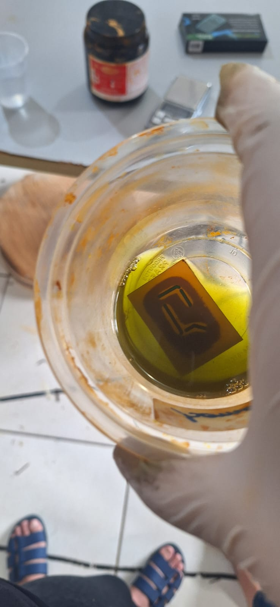
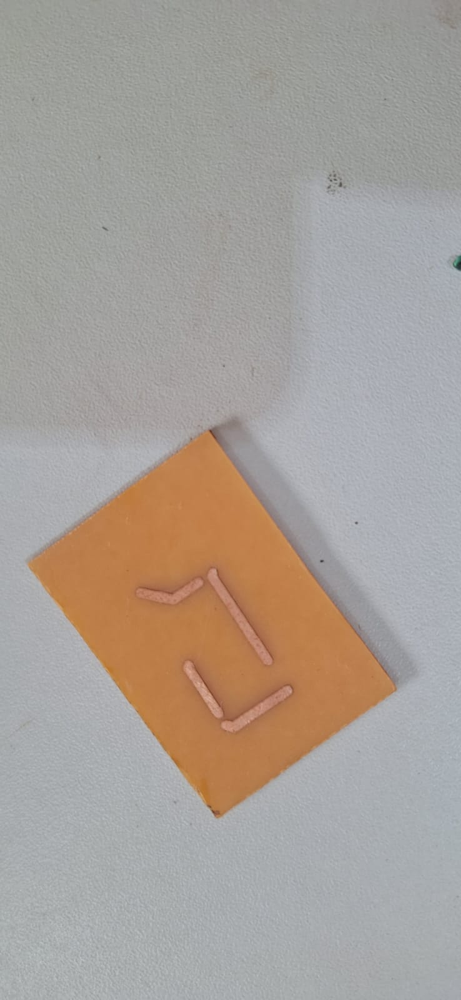

Chapter 7 Processo de Corrosão
7.1 O Que é a Corrosão
A corrosão é um processo de desgaste ou deterioração de materiais, geralmente metais, devido a reações químicas com o ambiente. Em contextos de fabricação digital, a corrosão controlada é utilizada para criar circuitos em placas de fenolite. Este processo é essencial na fabricação de placas de circuito impresso (PCB), onde as áreas de cobre indesejadas são removidas, deixando apenas as trilhas condutoras necessárias para o circuito.
A corrosão oferece uma maneira eficiente e precisa de fabricar circuitos complexos, permitindo a produção de PCB com alta resolução e detalhamento. Este método é amplamente utilizado na indústria eletrônica devido à sua precisão e custo-benefício, especialmente em prototipagem e produção em pequena escala.
7.2 Como Funciona a Corrosão
7.2.1 Materiais e Ferramentas
Para realizar o processo de corrosão, são necessários diversos materiais e ferramentas, incluindo placas de fenolite revestidas com cobre, adesivos de máscara, um produto corrosivo como o hipercloreto, e software de design de circuitos, como o EasyEDA.
7.2.1.1 Software de Design de Circuitos
O primeiro passo é criar o design do circuito em um software como o EasyEDA. Este software permite a criação de esquemas detalhados, ajuste das trilhas e posicionamento dos componentes. O design final é então exportado para ser utilizado na etapa de mascaramento.
7.2.1.2 Mascaramento com Máquina a Laser
Após a criação do design, é necessário aplicar uma máscara sobre a placa de fenolite. Esta máscara define as áreas que serão corroídas e as que serão preservadas. Utiliza-se uma máquina a laser para cortar o adesivo da máscara conforme o design do circuito, que é então aplicado sobre a placa de fenolite. A máscara cobre as trilhas do circuito, protegendo-as do processo de corrosão.
7.2.1.3 Processo de Corrosão
Com a máscara aplicada, a placa é submersa em uma solução de hipercloreto, que corrói o cobre exposto, removendo-o e deixando apenas as áreas protegidas pela máscara. O tempo de exposição e a concentração da solução de hipercloreto são cuidadosamente controlados para garantir uma corrosão uniforme e precisa.
7.2.2 Monitoramento e Ajustes
Durante o processo de corrosão, é crucial monitorar continuamente o progresso para evitar a remoção excessiva de cobre. Após o tempo necessário, a placa é removida da solução e lavada para interromper a reação química. A máscara é então retirada, revelando as trilhas do circuito prontas para a montagem dos componentes.
7.3 Experiência Prática: Fabricação de um Circuito
Durante o treinamento prático, desenvolvi um projeto de circuito utilizando o processo de corrosão. Abaixo, descrevo detalhadamente cada etapa do processo, incluindo as instruções recebidas e a execução do projeto.
7.3.1 Recebendo as Instruções
Primeiro, recebemos instruções detalhadas sobre como fazer o processo. Onde, quando for necessário para criação de um circuito impresso, podemos utilizar o software EasyEDA para criar o design do circuito e como operar a máquina a laser para cortar a máscara.
7.3.2 Aplicando a Máscara e Realizando a Corrosão
Utilizei a máquina a laser para cortar a máscara adesiva de acordo com o design do circuito. A máscara foi então aplicada sobre a placa de fenolite, cobrindo as trilhas e expondo as áreas a serem corroídas. Submergi a placa na solução de hipercloreto, monitorando continuamente o progresso da corrosão.
7.3.3 Resultado Final
Após o tempo necessário de corrosão, retirei a placa da solução e removi a máscara, revelando o circuito finalizado. As trilhas estavam bem definidas e prontas para a montagem dos componentes eletrônicos.
7.3.4 Reflexão Sobre o Processo
A experiência prática com o processo de corrosão foi extremamente educativa e envolvente. Aprender aplicar a máscara com precisão e controlar o processo de corrosão proporcionou uma compreensão aprofundada da fabricação de PCB. A precisão e a eficácia do método destacam sua importância na fabricação digital.
Durante o processo, a atenção aos detalhes, como a configuração correta da máscara e o monitoramento contínuo da corrosão, foi crucial para garantir um resultado de alta qualidade. Este projeto não apenas aprimorou minhas habilidades técnicas, mas também me proporcionou uma visão valiosa sobre os processos envolvidos na fabricação de circuitos eletrônicos.